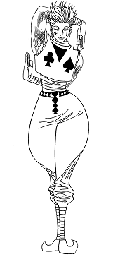

H I S O K A M O R O W
Hisoka Morow (ヒソカ モロウ, Hisoka Morou) es un Cazador y antiguo miembro de la Brigada Fantasma. Él siempre está en busca de oponentes fuertes, y perdonará a los que tienen un gran potencial, como Gon y Killua para que sean lo suficientemente fuertes como para realmente desafiarlo. Originalmente sirvió como el principal antagonista del Arco Examen de Cazador y secundario en el Arco Coliseo del Cielo, antes de convertirse en un personaje de apoyo durante el Arco Ciudad Yorkshin. Durante el Arco Elección del 13vo Presidente de Cazadores, brevemente repitió su papel como antagonista secundario.
| D E B U T |
|---|
| MANGA - Capitulo 005 |
| ANIME - Episodio 03 |
| V O Z |
| JAPONES - Daisuke Namikawa |
| P E R F I L |
| SEXO - Masculino |
| EDAD - 28 años |
| CUMPLEAÑOS - 06 de Junio |
| Color de Cabello - Rojo |
| Color de ojos - Amarillo |
| Altura - 1.87 m |
| Peso - 62 kg |
| Tipo de Sangre - B |
| Ocupación - Cazador |
| Araña #4 |